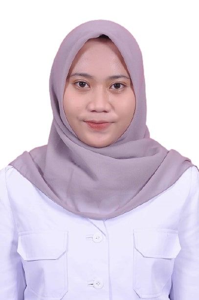
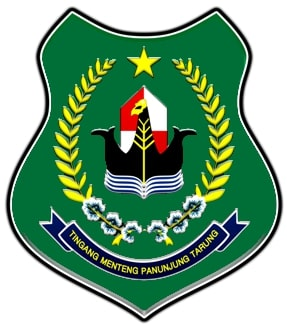
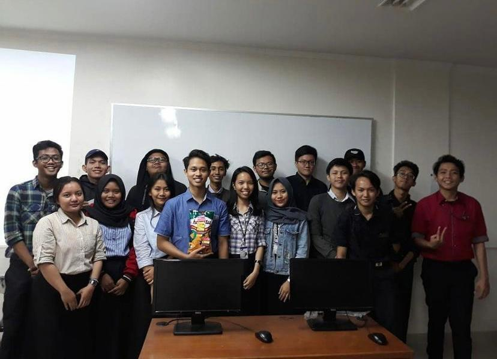
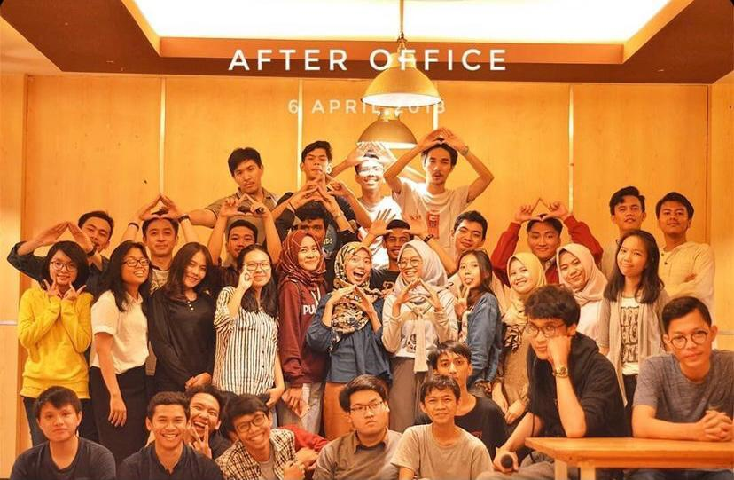
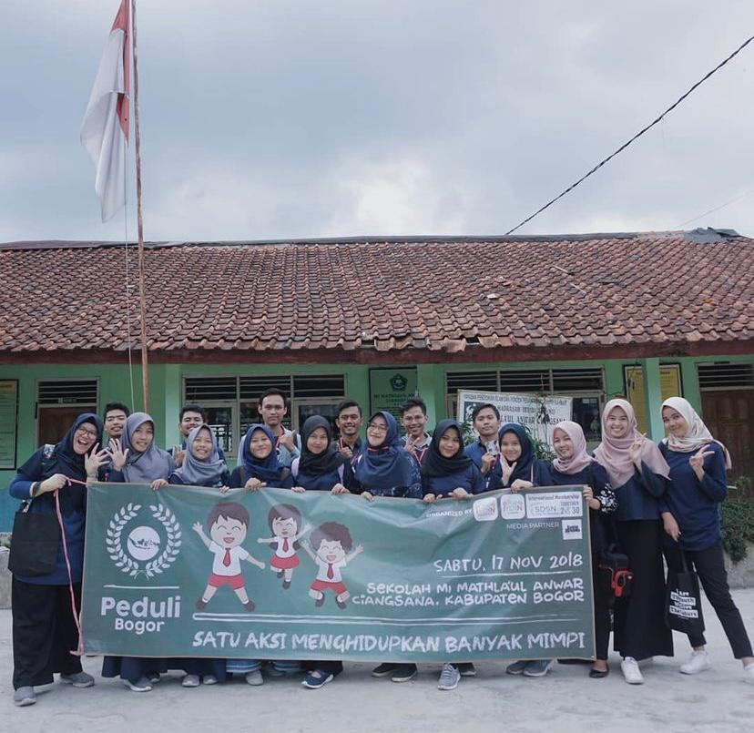
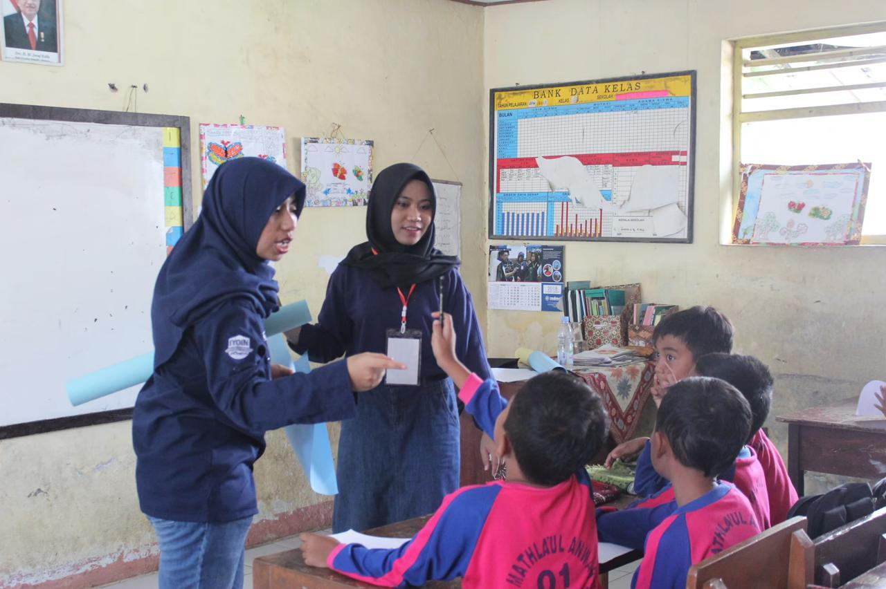
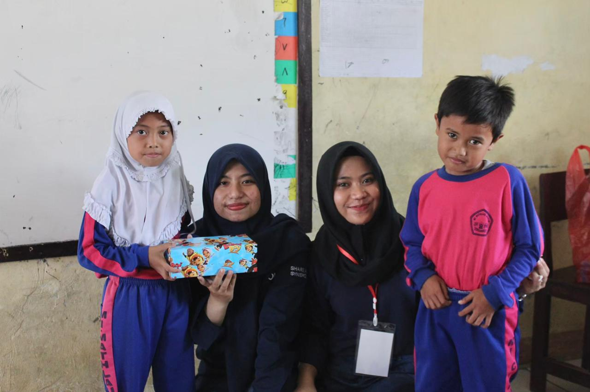
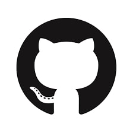

SITI ANGGRAINI ALFATIHAHFRONTEND DEVELOPER |
|  |
Profil PribadiSeorang fresh graduate yang tertarik mengembangkan karir di bidang IT khususnya pengembangan website yaitu pada bagian frontend. Saya termotivasi untuk mengasah dan mengaplikasikan ilmu yang saya miliki di lingkungan IT Perbankan. Saya sangat antusias untuk belajar hal baru, teliti, jujur, bertanggung jawab, dan dapat bekerja sama dalam tim. |
| Nama Panggilan | : | Anggi |
| Jenis Kelamin | : | Perempuan |
| Tempat, Tgl Lahir | : | Palangkaraya, 30 Oktober 1998 |
| Agama | : | Islam |
| Alamat | : | Jalan.Tjilik Riwut, Gg.Manunggal 1A No.171 Kapuas, Kalimantan Tengah, 73516 |
Riwayat Pendidikan
Universitas Gunadarma/Depok, Teknik Informatika, 2016-2020
SMAN 1 Kuala Kapuas, 2013-2016
Pengalaman
Pekerjaan
Badan Perencanaan Pembangunan Daerah Kabupaten Kapuas, Staff Sub Bagian Perencanaan, 2021-Sekarang
Berperan dan bertanggung jawab untuk membantu pekerjaan pemerintah daerah khususnya pada BAPPEDA dalam mengelola sistem aplikasi daerah seperti KRISNA DAK, SiRUP LKPP dan E-SAKIP Kabupaten Kapuas.
Organisasi
Laboratorium Teknik Informatika Universitas Gunadarma, Asisten, 2017-2019
Berperan dan bertanggung jawab sebagai asisten mengajar untuk mata praktikum Sistem Informasi Akuntansi, Algoritma Pemrogramman 1 dan 2, Sistem Informasi, Perencanaan dan Analisis Algoritma.
 Volunteer
Indonesia Youth Opportunities in International Networking (IYOIN) Bogor, 2018
Bertanggung jawab dalam mempersiapkan bahan dan materi ajar untuk mengajar pada event yang diadakan oleh IYOIN yaitu Peduli Bogor di sekolah MI Mathla'ul Anwar, Ciangsana.
  Hubungi Saya
| No.Telp | 082154845311 |
| sitianggrainialf@gmail.com | |
|  | |
 |